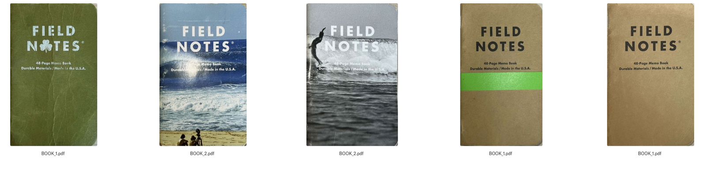
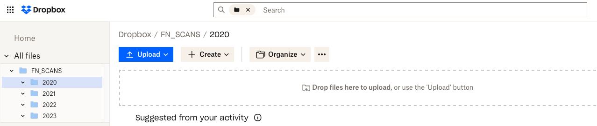

Scanning Field Notes
Taking my notebooks with me everywhere has never been easier...
Why Scan?
I love notebooks and writing with a pencil. Even more so, I love my Field Notes↗. These little notebooks have been a staple in my life for years, probably since starting college in 2010.
"I'm not writing it down to remember it later, I'm writing it down to remember it now." - Field Notes
The only problem I have with filling these little guys up is that once they are full and stored away, I can't remember what was in them. I sometimes find myself wanting to recall something I wrote down or sketched out. I can't carry all of these full notebooks with me everywhere, at least not the physical copies...
Scanning
Scanning my Field Notes was the best way I could think of to preserve the contents of these pocket notebooks. I store them in Dropbox so I can access them all of the time.
I use the Scannable App from Evernote↗ to perform the actual scanning. After some trial and error with various scanning apps, (Apple Notes, Dropbox Scan, etc) this allowed me the best scan, the quickest workflow, and the most flexibility.
Once the scan of every page spread is complete, and the front/back cover, the PDF is uploaded directly to Dropbox in the appropriate folder.
I store them all in a root FN_SCANS directory with yearly sub-directories under that 2020, 2021, 2022 etc.
I also use the Dropbox mobile app and have a saved/downloaded local copy in Dropbox for quick access regardless of service.
I love my Field Notes dearly, and I also like the idea of this being a record backup. I keep the physical copy in my home office, and now I have a digital copy in the event of some natural disaster (or worse). Being that these notebooks hold a record of my life at the time it is nice peace-of-mind.